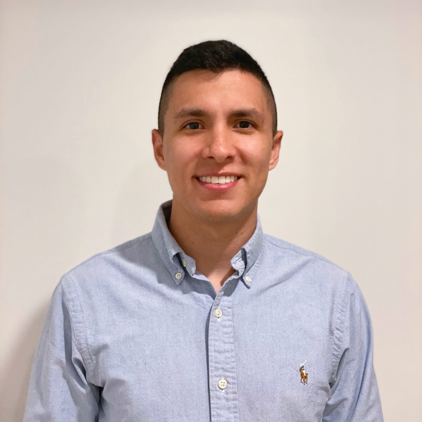

As a business engineer, I see innovation and knowledge management, as the key engines of the companies' continuous growth and improvement. Understanding their crucial impact on the companies' strategic goals and their profitable growth. I constantly seek to positively impact my environment thinking globally and acting locally with the different tools and engineering methods to assess and improve business projects and ideas.
I consider myself a loyal, pragmatic and orderly man, characteristics that have helped me to get optimum performance in all the projects that I have done in the past.
Strategic planning and Innovation Trainee
Continuous Improving Analyst
Data Analyst
Management Engineering
Certificate IV - Business
Diploma of Business
Julian Franco Rua
Phone: +61 450330747
julianfrancor@gmail.com